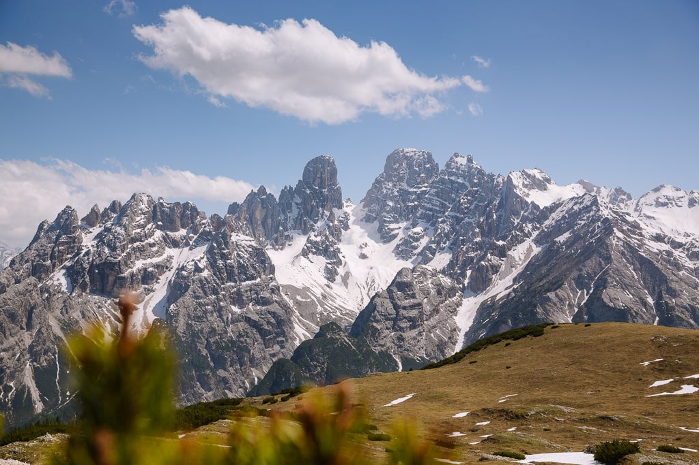

The Italian Alps are an enticing wonderland of jagged mountain scenery, lush alpine meadows,
charming villages and glistening lakes. Here are 12 reasons why you should visit.
Covering a glorious mountain-filled arc sweeping across the top of the country, the Italian Alps
are a scenic wonderland; an area of natural rugged beauty bursting with wonderful places to
visit.
High up in the Italian mountains walk along high-alpine trails under razor-sharp vertical peaks;
enjoy the tranquillity of emerald lakes glistening with a glacial glow; or savour the beauty of
flower-filled alpine meadows.
At the lower altitudes unwind in beautiful Italian villages, sail on lakes lined with mansions,
explore one of the most stylish cities in the world or sip wine in ancient surrounds.
There are so many places to visit in the Italian Alps and with hiking in summer, skiing in
winter and plenty in between, there’s never a bad time to visit.
Here are 12 reasons for making the Italian Alps your next holiday destination.
WHERE ARE THE ITALIAN ALPS
The Italian Alps sweep in an arc from Monaco in the west to Trieste in the east, covering the
northern tip of Italy.
They are made up of 3 main areas. The western side is the southern end of the high Alps: a
dramatic playground of snowcapped mountains bordering France and Switzerland. The central
section is the Italian Lakes where large lakes are framed by smaller hills and beautiful
villages. While the eastern section is the Dolomites – jagged rocky peaks framed by lush alpine
meadows.

The entire region of the Italian Alps is most easily accessible from Milan. But if you want to
explore the eastern section, then the best things to do in the Dolomites are only a short
journey from Venice or Verona in the south or Innsbruck (Austria) in the north. All of which are
great spots to begin an Italian Alps Road Trip.
The Italian Alps sweep in an arc from Monaco in the west to Trieste in the east, covering the
northern tip of Italy.
They are made up of 3 main areas. The western side is the southern end of the high Alps: a
dramatic playground of snowcapped mountains bordering France and Switzerland. The central
section is the Italian Lakes where large lakes are framed by smaller hills and beautiful
villages. While the eastern section is the Dolomites – jagged rocky peaks framed by lush alpine
meadows.
There are so many places to visit in the Italian Alps and with hiking in summer, skiing in
winter and plenty in between, there’s never a bad time to visit.
Here are 12 reasons for making the Italian Alps your next holiday destination.
There are so many places to visit in the Italian Alps and with hiking in summer, skiing in
winter and plenty in between, there’s never a bad time to visit.
Here are 12 reasons for making the Italian Alps your next holiday destination.
There are so many places to visit in the Italian Alps and with hiking in summer, skiing in
winter and plenty in between, there’s never a bad time to visit.
Here are 12 reasons for making the Italian Alps your next holiday destination.
We are Paul & Mark, two curious & adventurous travellers who provide practical information to
help you make the most of your travels.
RELATED GUIDES
VISIT SANTA MADDALENA CHURCH AND MORE IN VAL DI FUNES, ITALY
HOW TO HIKE THE SASSOLUNGO CIRCUIT IN THE DOLOMITES + INSTRUCTIONS & MAP
DOLOMITES HIKING / 9 OF THE BEST DAY HIKES IN THE DOLOMITES


.jpg)